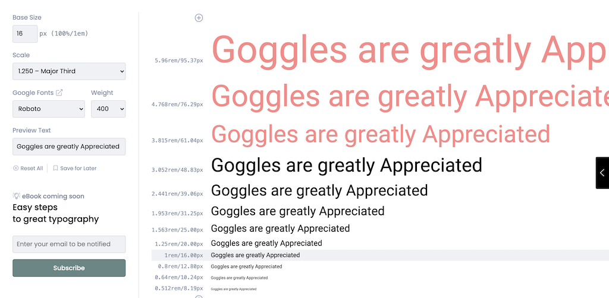

Basic Rules
R: Use one font....two at a push
It keeps life simpler - Two types needs skill If you really feel you need two, try using two fonts designed to be used together e.g. Circe and Circe Rounded
Google Fonts, or fonts in use are also good places to find fonts that go well together
R: Choose a readable size
C
hoose the most readable font size for the main body of the text Normally this is around 16 or 18
R: Use a type scale
From that base size, create a font scale (see grid lover and type-scale.com)

R: Skip font sizes for emphasis
You don't have to use every font size on the scale - skipping a size for emphasis is fine
R: Left justify
Don't justify on both sides, you'll just end up with random gaps in the text.
R: Stay away from dark corners and dangerous edges
Don't have text jammed right into the edges. It's weird.
R: Alignment
Left vertically, and normally baseline horizontally

R: Vertical gaps between elements
Should be based on line height
R: Measure
A.k.a line length, a.k.a number of characters that fit on a line. 65 characters is ideal. 40-80 is sensible min/max
R: Group using lines
A line above a section gives it definition as a "chunk" (see google fonts)
R: Line height
Typically, you may need to increase line height with small font sizes in order to make text more readable, and potentially decrease it with large font sizes. It is especially likely to need to be decreased if the text is all caps, and there are no descenders
R: Letter spacing
USING UPPERCASE? Often, a bit of extra letter spacing can help readability when USING UPPERCASE
R: Closeness and space
You need related elements close, and space between unrelated elements. This video gives a great introduction to using spaces and fonts when organizing elements of text
R: How to distinguish text elements
Then you need to indicte the hierarhy of importance of the elements Ways of using typography to indicate the hierarchy include font size, weight, darkness and color
Change Size
Use a different Weight of Font
Dark & important , Lighter = less, or some Color